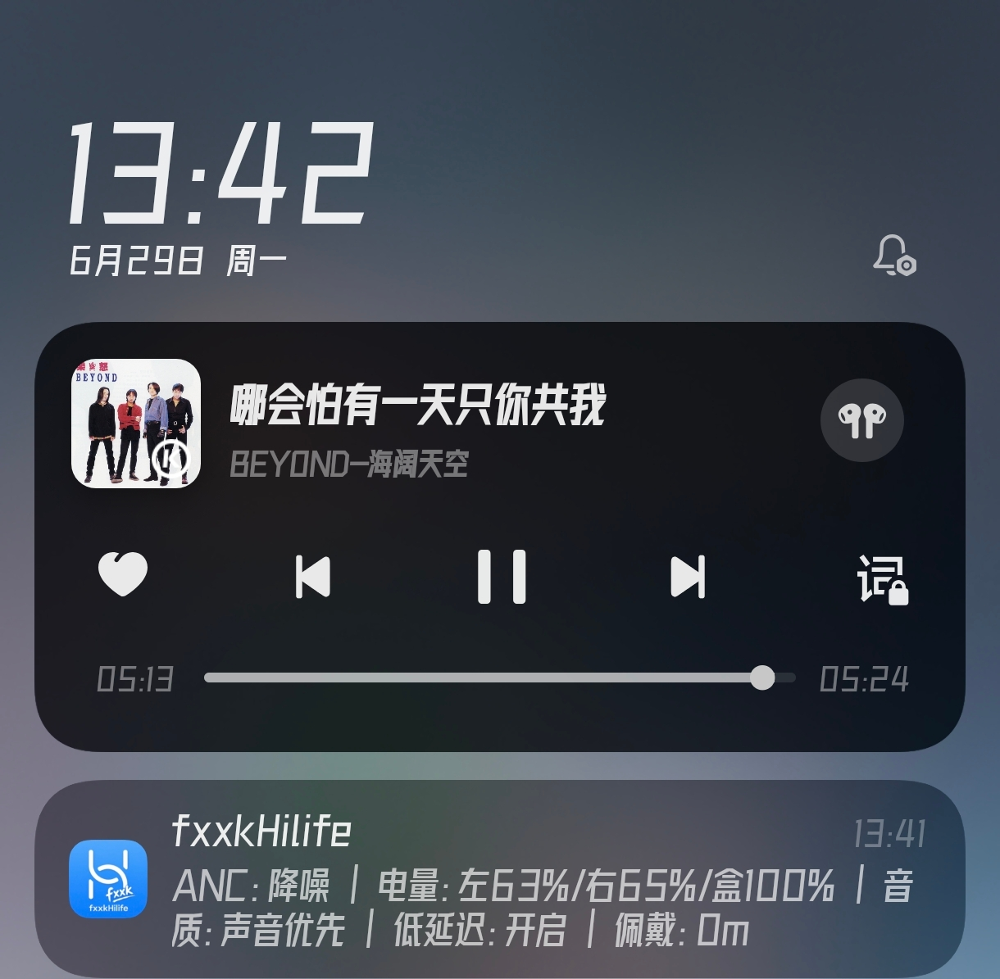

fxxkHilife
HUAWEI FreeBuds / HONOR Earbuds 的轻量离线控制 App
无需登录 · 无广告 · 完全离线 · 开源
名字的意味
一个名字背后的清醒与温柔
却在你想要推开窗时忽然提醒：要借一下钥匙吗？
fxxkHilife 那声轻轻的 f，不是咒骂，是深夜独坐时对自己说的一句不必了。
是终于挣脱那件过于合身的制服，把控制权一寸一寸攥回掌心的某种确信。
所以它不叫 HateHiLife，不叫 ByeHiLife。
它叫 fxxkHilife——像在别人的花园里开出的一朵野花，温柔，但从不妥协。
项目理念
你的耳机，你的控制权。
我们相信硬件属于购买它的人，但很多厂商用封闭的生态把本该属于用户的控制权锁进了自己的 App。
fxxkHilife 的意义不是"破解"，而是归还——
用一条蓝牙 SPP 通道，把 ANC 切换、手势定制、音质偏好……
所有这些本该在指尖的东西，还给你。
仅作学习与研究。
自由的前提，是理解规则。
核心特性
一个纯粹的离线控制工具，只做一件事，把它做到极致
离线直连 · 无需账号
通过蓝牙 SPP 直接控制耳机，无需登录华为账号、无需联网、无广告。即开即用。
ANC 三模快切
通知栏一键切换 关闭 / 降噪 / 透传，支持 QuickSettings Tile 快捷开关，抬手即切。
Material3 + 自定义壁纸
三态主题（跟随系统/深色/浅色），支持导入自定义壁纸并选择作用域，打造专属视觉风格。
手势全定制
双击/三击/滑动/长按——每个手势独立设置页面，全部中文选项，一目了然。
低延迟模式
一键开启游戏低延迟模式，音画同步优先。连接即自动开启，无需每次手动切换。
自适应轮询 · 省电智能
前台 800ms 高频刷新，后台 5s 低频保活。由 Activity 生命周期自动调度，省电又流畅。
通知栏实时状态
ANC 模式、音质模式、低延迟状态、佩戴时长——通知栏一目了然，无需打开应用。
完全开源 · 透明可控
基于 OpenFreebuds 协议逆向工作，代码全公开。无暗埋权限、无数据上传、无隐私收集。
电池详尽解析
左右耳、充电盒独立电量显示 + 充电状态识别。FreeBuds 6i 实测 9/13 Handler 5.5s 内就绪。
已支持 / 待验证设备
已有型号识别与能力表；不同固件和系统蓝牙栈可能影响实际表现，欢迎提交日志帮助校准
| 设备 | 状态 | 说明 |
|---|---|---|
| HUAWEI FreeBuds 6i | 已实测 | 当前主要开发设备，ANC / 手势 / 电量 / 低延迟 / 音质偏好持续调优中。 |
| HUAWEI FreeBuds 7i | 临时保守适配 | v2.9.0 起保留保守能力表以降低初始化压力，并暂时隐藏未确认可用的自动暂停选项；完整适配将在下一轮大版本“更多型号/更多厂商耳机适配”中继续推进。 |
| HUAWEI FreeBuds 5i | 待更多实测 | 能力表已覆盖 ANC、ANC 强度、手势、音质偏好、低延迟等。 |
| HUAWEI FreeBuds 4i / HONOR Earbuds 2 / 2 Lite / SE | 待更多实测 | 基础能力：ANC、电量、佩戴检测、双击/长按、自动暂停等。 |
| HUAWEI FreeBuds Pro / Pro 2 / Pro 3 / Pro 4 / FreeClip | 重点招募 | Pro 系列和 FreeClip 能力较多，尤其需要测试者确认不同固件表现。 |
| HUAWEI FreeBuds SE / SE 2 / SE 4 | 待更多实测 | SE 系列型号差异较大，需要日志校准能力表。 |
| HUAWEI FreeBuds Studio / FreeLace Pro / FreeLace Pro 2 | 待更多实测 | 头戴式/颈挂式设备部分 TWS 能力不适用，需要单独验证。 |
正在招募测试者
如果你有 FreeBuds 5i、Pro 系列、SE 系列、FreeClip 或 FreeLace，欢迎帮助测试
反馈时请尽量提供：耳机型号与固件、手机型号与 Android/ROM、App 版本、异常功能描述，以及应用内“分享日志”导出的日志文件。v2.9.0 起日志会自动包含版本号，便于定位问题来源。
- 连接问题：请说明系统蓝牙里是否已显示耳机连接。
- 功能问题：请说明 ANC、电量、手势、低延迟、音质偏好等哪些正常/异常。
- 未知型号：也可以尝试扫描连接，通用 Handler 的日志非常有价值。
功能展示
FreeBuds 6i 实机录制：初次进入、常驻通知、自动低延迟与不打开应用切换 ANC

开发历程
从协议逆向到完整应用 · 由 DEVELOPMENT_LOG.md 自动生成